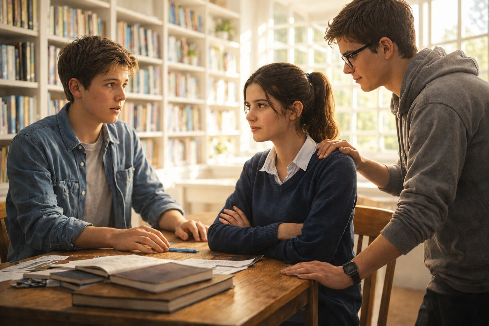

READ · THE UNSAID
Sophie and Jake had been best friends since sixth grade. They worked on every school project together. So when the history teacher announced a big presentation, they immediately teamed up.
Sophie was a perfectionist. She spent hours on her part, researching facts and creating beautiful slides. On Tuesday night, at 11:47 PM, she sent Jake her draft with a message: «Hey, I've finished my part. Could you look at it and tell me what you think?»
Jake was exhausted. He had practised football for three hours, then helped his little brother with homework. He glanced at the message, opened the file, skimmed it, and tapped a quick «like» emoji. Then his eyes closed.
The next day, they met in the library. Sophie was cold. She answered his questions with one word: «Fine.» «Okay.» «Sure.» She didn't look at him. Her arms were crossed.
Jake felt a familiar anger rising. What's her problem? I said her work was good. Why is she acting like this? He stopped talking too. An awkward silence grew between them.
Their friend Mark sat nearby, watching. Finally, he turned to Sophie and asked quietly: «Hey, is everything okay? How's your grandmother? I heard she was taken to the hospital on Tuesday.»
Sophie's eyes filled with tears. «She's stable now, but… I was so scared. I didn't sleep that night. I just worked to distract myself.»
Jake froze. Tuesday night. While he was sleeping, Sophie had been alone, terrified, waiting for news. She didn't need a grammar check. She needed a friend.
He took a deep breath. «Sophie… I didn't know. I'm so sorry. I was blind.»
Sophie looked up. «I didn't tell you. I thought you would notice something was wrong. But you just sent an emoji.»
«I was exhausted,» Jake said. «But that's not an excuse. Tell me now. How are you? How is she?»
For the first time that day, Sophie's shoulders relaxed. She started talking. Jake listened. And the unsaid was finally spoken.

GLOSSARY
| Слово / Словосочетание | Транскрипция | Перевод |
|---|---|---|
| since | [sɪns] | с (какого-то времени) |
| to team up | [tiːm ʌp] | объединяться, работать в паре |
| perfectionist | [pərˈfekʃənɪst] | перфекционист |
| to spend (time) | [spend] | тратить (время) |
| draft | [dræft] | черновик |
| exhausted | [ɪɡˈzɔːstɪd] | измученный, вымотанный |
| to practise | [ˈpræktɪs] | тренироваться, заниматься |
| to glance | [ɡlæns] | взглянуть мельком |
| to skim | [skɪm] | просмотреть бегло |
| to tap | [tæp] | нажать (на экране) |
| cold | [koʊld] | холодный |
| to cross one's arms | [krɔːs wʌnz ɑːrmz] | скрестить руки |
| familiar | [fəˈmɪliər] | знакомый |
| anger | [ˈæŋɡər] | гнев |
| awkward | [ˈɔːkwərd] | неловкий |
| silence | [ˈsaɪləns] | тишина, молчание |
| to turn to | [tɜːrn tuː] | повернуться к |
| to be taken to hospital | [biː ˈteɪkən tuː ˈhɑːspɪtl] | быть доставленным в больницу |
| to fill with tears | [fɪl wɪð tɪrz] | наполниться слезами |
| stable | [ˈsteɪbl] | стабильный |
| scared | [skerd] | испуганный |
| to distract | [dɪˈstrækt] | отвлекать(ся) |
| to freeze | [friːz] | замереть |
| blind | [blaɪnd] | слепой |
| to notice | [ˈnoʊtɪs] | заметить |
| excuse | [ɪkˈskjuːs] | оправдание |
| shoulders | [ˈʃoʊldərz] | плечи |
| to relax | [rɪˈlæks] | расслабляться |
| unsaid | [ʌnˈsed] | недосказанное |